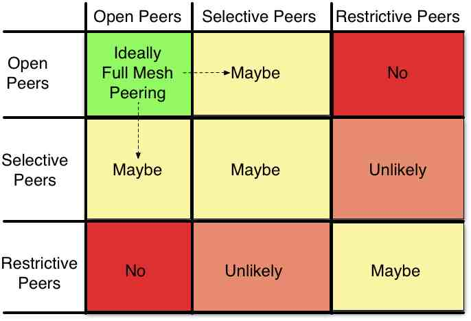
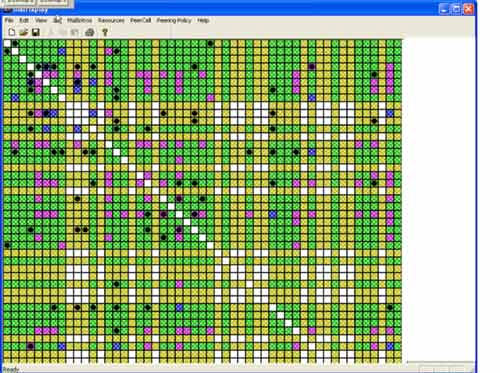

Tactic 12. Strengthen Peering Population
In Europe, a defense system is automatically in place; if a rival IXP approaches a founding member of a dominant European IXP, for example, the result is effectively intelligence gathering for the dominant IXP. The founding members are unlikely to move from “their” IXP, although they may be persuaded to add a presence elsewhere if given a compelling reason. The Europeans have proven to be very protective of their IXPs.
For commercial IXPs in the U.S., however, it is critical to work very closely with the peering community to build and maintain a strong alliance with the peering population.
This tactic goes beyond understanding the customers’ businesses. It is critical to understand their inclinations. This tactic is about systematically tracking the interconnections and effectively managing introductions to maximize the degree of interconnection. The litmus test of success is the degree of the mesh.
The peering map (Figure 13-9) tracks peering sessions between classes of peers. At least one side needs to share its peering session lists in order to fill in the appropriate square with a peering mark. Let’s look at the peering map.
Value of the IXP = f(p, r, v, m) - c
p: The population
r: The routes available
v: The volume of traffic exchanged
m: The market perception of the IXP
c: The cost of participatioon at the IXP
From the peering map in Figure 13-9 we can see that a maximally peered IXP would have all Open peers peering with all other Open peers.
Those ISPs with Selective Peering Inclinations require certain thresholds to be met (traffic volumes, interconnection points, ratios, etc.) and if met, an IXP can facilitate introductions leading to peering. Sometimes Open and Selective peers will peer with each other. Selective peers may peer with other selective peers, but their policies need to be examined before the introductions are made. Some Selective peers prefer to manage their own peering and are not receptive to peering introductions, but my experience, very few will object to IXPs providing introductions and facilitating peering. The arrows in Figure 13-9 highlight opportunities for the IXP to facilitate peering that might otherwise not happen.
Introductions to Restrictive peers are not worth doing since Restrictive peers generally do not want additional peers. Making them aware of large Selective peers as they join may be a good idea and may indirectly facilitate peering between Restrictive and Selective peers.
With the peering map filled in and maintained, the peering policies can be systematically tracked and understood, and an IXP peering manager can facilitate the introduction of prospective customers to the current peering population, helping to ensure the value growth of the IXP. The absence of such peering initiatives means managing the IXP development based on hope and luck.
To illustrate IXP peer tracking, consider a snapshot of a peering population at a well-established IXP in Figure 13-10. The nature of the participants’ interconnections are plotted across the X and Y axes, with the intersection highlighting the peering inclination and peering state.

Figure 13-9. Strengthen Peering Population.
Peering Map Legend
Green indicates that both parties have an Open Peering Policy or have explicitly indicated a willingness to peer with the other party.
Yellow indicates one or the other party has not indicated affirmatively or negatively, either by policy or explicitly, an inclination to peer with the other party.
Purple indicates that there is a known Public Peering relationship.
Blue indicates that there is a known Private Peering relationship.
Black diamonds indicate that a peering introduction has been made.
White means that we have no information about whether these two parties would peer.
By systematically tracking and managing the customer base and interconnections (to the extent allowed by the population), an IXP can maximize its interdependence stickiness.

Figure 13-10. Track IXP Peering.